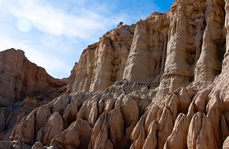
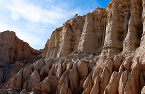

Trail Vistas
Here's just a few of our favorite snaps taken by hikers around the Golden State.

Red Rock Canyon

Lake Tahoe

Redwoods
Looking for the best of the best? Here are the top three trails in California:
Who can resist the highest point in the lower 48? With views like these, not us.
Rating: Difficult
The jewel of Yosemite, the hike to Half Dome is best spread over a couple of days with an overnight in Little Yosemite Valley.
Rating: Moderate
A gem of a trail right next to a metropolis, complete with numerous stream crossings, thick forests and a 50-foot waterfall
Rating: Easy/Moderate
Here's just a few of our favorite snaps taken by hikers around the Golden State.

Red Rock Canyon
Lake Tahoe
Redwoods
Use this convenient checklist to make sure you've got the essentials for any significant trail-blazing.